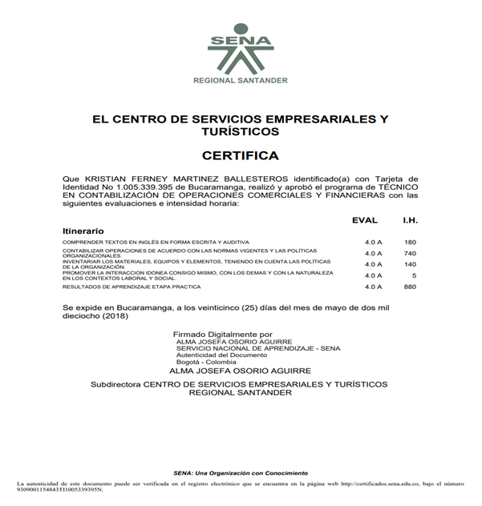
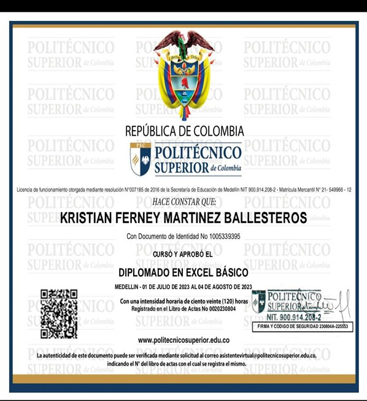

Kristian Ferney Martinez Ballesteros
Desarrollador de Software | Apasionado por el código y la innovación
Sobre Mí
Soy un joven de 24 años apasionado por el desarrollo de software, actualmente en formación como Técnico en Desarrollo de Aplicaciones para Dispositivos Móviles. Busco una empresa que me patrocine para realizar mis prácticas profesionales, donde pueda crecer junto a un equipo de trabajo dinámico y aportar con mis conocimientos y habilidades. Estoy comprometido con la excelencia y motivado por la oportunidad de contribuir al desarrollo de soluciones innovadoras en el ámbito tecnológico.
Formación Académica
- 2017 - Colegio Obtengo titulo de Bachiller
- 2017 - Colegio Obtengo titulo de Tecnico en contabilidad
- 2023 - Academia Obtengo titulo de un diplomado en ecxel basico
- 2024 - Bootcamp Obtengo titulo de un Bootcamp en programacion nivel basico
- 2024 - Presente: Técnico en Desarrollo de Aplicaciones para Dispositivos Móviles (SENA) y estoy en proceso de obtener mi titulo.
Certificados



×

Perfil Laboral
He desempeñado labores multiples en un reconocido supermercado de Bucaramanaga.
Experiencia
×

Tecnologías que manejo
Referencias
Nombre
Parentesco
Teléfono
Leidy Tatiana Martinez
Hermana
3187978758
Wilmer pinto
Amigo
3166522268
Nicolas quiroga
Amigo
3163545096
| Nombre | Parentesco | Teléfono |
|---|---|---|
| Leidy Tatiana Martinez | Hermana | 3187978758 |
| Wilmer pinto | Amigo | 3166522268 |
| Nicolas quiroga | Amigo | 3163545096 |